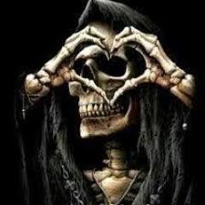
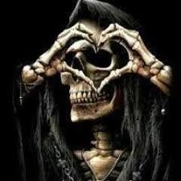

-
Paulo Marreta True Form


Morteiro é o terceiro mais forte.
Os deuses convocaram dois seres divinos à existência, o masculino Fogão e o feminino Morte, e ordenou-lhes para criarem seus primeiros lares. Para ajudá-los a fazer isso, os deuses deram ao Fogão e Morte uma lança decorada com jóias, chamado Amenonuhoko (Opala). As duas divindades eram a ponte entre o Céu e a Terra (Amenoukihashi) e agitaram o mar com a lança do céu. Quando as gotas de água caíram da ponta da lança, a ilha Onogoro-Shima foi formada. Eles desceram à ilha a partir de uma ponte do céu. Eles tiveram dois filhos, Paulo Marreta e Morteiro, mas eram imperfeitos e não eram considerados como deuses. Em seguida, eles colocaram as duas crianças num barco que foi arrastado pela correnteza de Onogoro-Shima. Então eles perguntaram aos deuses o que eles fizeram de errado. Após receberem a resposta, Fogão e Morte decidiram se casar novamente e seu casamento foi um sucesso.
Desta união nasceram o Ohoyashima, ou as oito principais ilhas do Japão. Eles criaram muitas ilhas, muitas divindades e culturas.

Morteiro é o terceiro mais forte.
Susanoo, descontente com a negociação destinada a remediar uma disputa entre os seus dois irmãos, faz grandes patifarias à irmã Amaterasu, 'deusa do Sol', a ponto de a fazer fugir para uma caverna chamada Iwayado, deixando o mundo na escuridão. Todos os outros kami, reunidos, concebem então um plano para a fazer sair. Com grande alarido, gritos e risos, despertam a curiosidade da deusa solar, que a leva a entreabrir a entrada da caverna. Atraída por um espelho colocado à sua frente, acaba por sair, sendo então fechada a caverna, para a impedir de entrar novamente. Garantida de novo a luz, Susanoo é condenado a pagar uma multa e a ser desterrado dos céus. Mais tarde, ele arrepende-se e acaba por presentear a irmã com um esplêndido sabre retirado do corpo de um dragão que ele matou.
Susanoo aparece em várias histórias. Uma história fala do comportamento impossível de Susanoo contra Izanagi. Izanagi, cansado de sofrer ataques de Susanoo, desapareceu no Yomi. Susanoo desgostoso concordou, mas tinha negócios inacabados para resolver primeiro. Ele foi para Takamagahara (céu) para dizer adeus a sua irmã, Amaterasu. Amaterasu sabia que seu irmão não tinha boa intenção em mente e se preparou para a batalha. Amaterasu pensando que Susanoo queria o Takamagahara para si vai ao encontro de Susanoo.
Susano propõe um acordo para provar que suas intenções são boas. Amaterasu concorda. Primeiro, Amaterasu pega a espada de Susano e cria três deusas, as Munakata Sanjojin. Então, Susano pega um colar de jóias de Amaterasu e nascem cinco deuses, todos homens.
Amaterasu diz que os deuses que nasceram a partir do colar de jóias foram feitos a partir de um objeto seu, portanto são filhos dela. Amaterasu afirma também que as deusas que nasceram da espada são filhas de Susano. Todos os deuses dominavam um elemento da criação e da destruição: o ar, a luz e a natureza. Ambos os deuses reivindicaram a vitória. A insistência causou violentas campanhas que atingiu seu clímax quando Susanoo jogou um 'cavalo morto celestial' sobre os teares das criadas tecelãs de Amaterasu onde uma de suas criadas morreu. Amaterasu fugiu e se escondeu na caverna chamada Iwayado. Enquanto a deusa do sol desapareceu, as trevas cobriam o mundo.
pagina 2
-->